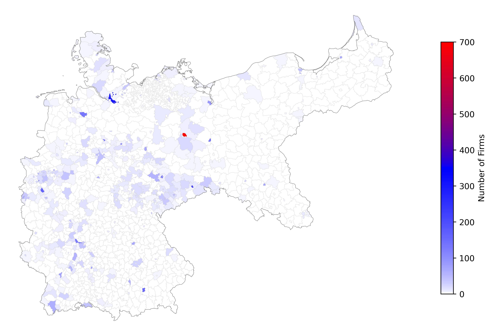
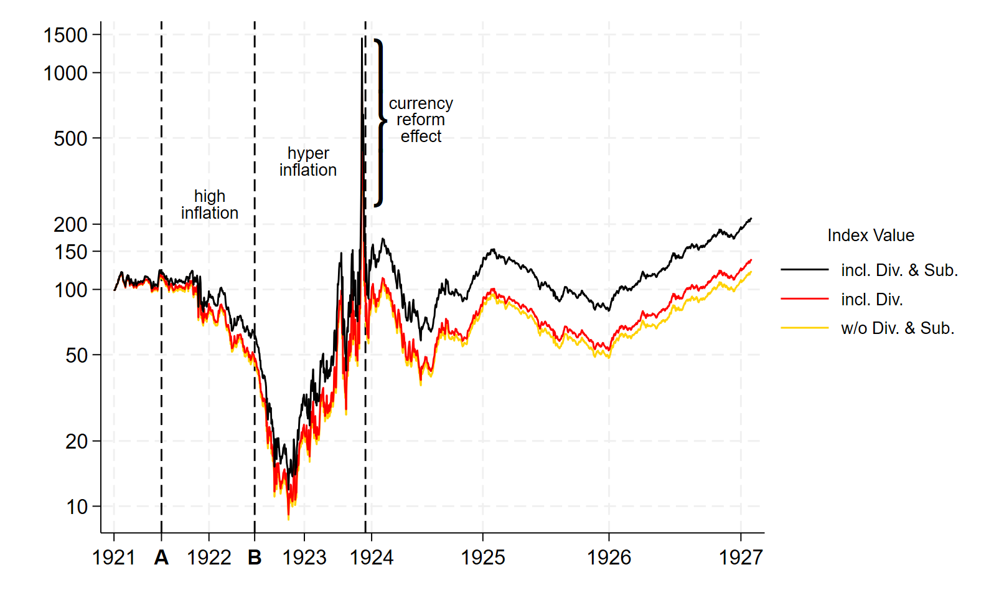
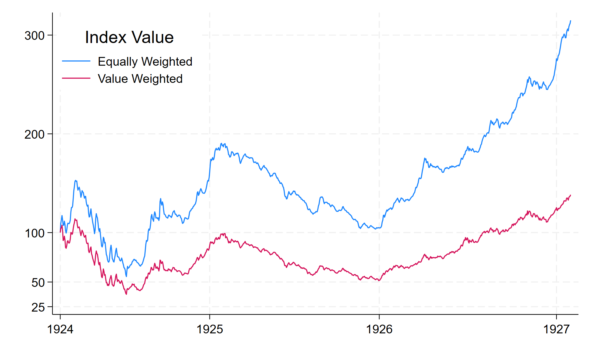

Your browser doesn't support the features required by impress.js, so you are presented with a simplified version of this presentation.
For the best experience please use the latest Chrome, Safari or Firefox browser.
Historical Financial Database
SAFE Frankfurt
Marius Liebald
June 2024
Any element with the class="notes" will not be displayed. This can
be used for speaker notes. In fact, the impressConsole plugin will
show it in the speaker console!
Agenda
1. Data sources & stylized facts
2. Codebook
3. Summary statistics
4. Remaining challenges & solution approaches
5. Data access
Stylized Facts
Handbuch der Deutschen Aktiengesellschaften (HdAG)
- Period covered (annually): 1896 - 1931
- # Firm-year observations: 289,850
- # Balance sheets extracted & assigned: 171,127
- Share of correctly extracted balance sheets: 80.96%
- # Person-year observations: 2,660,255
Berliner Börsenzeitung (BZZ)
- Period covered (daily): 1918 - 1930 (cleaned 1921 -1926)
- # Stock-day observations: ≈ 3,000,000
Balance Sheet Composition
Firm ID Generation using MLMATCH
Geographic Distribution (1900)

Stock Market Indices


Remaining Challenges & Solutions
Data Quality
- OCR
- Incorrect line classification → More training data
- ID generation trade-off: time v. quality → Improve execution efficiency of matching model
Issues with original sources
- Inconsistent usage of separators for person-level data → LLM for harmonization
- Inconsistent usage abbreviations during hyperinflation → LLM for harmonization
- Too general labeling of industries for modern classification schemes → LLM for firm-level classification
- "Hotels, Restaurants, Theater, Zoologische Gärten, Vereine."
Data Access
Technical access
- Hosted on a local PostgreSQL database instance at SAFE
- Can be accessed through database management tools like pgAdmin
De-facto access
- Eventually publicly available in line with the FAIR principles
- Currently early access to contributers
- However, common projects possible